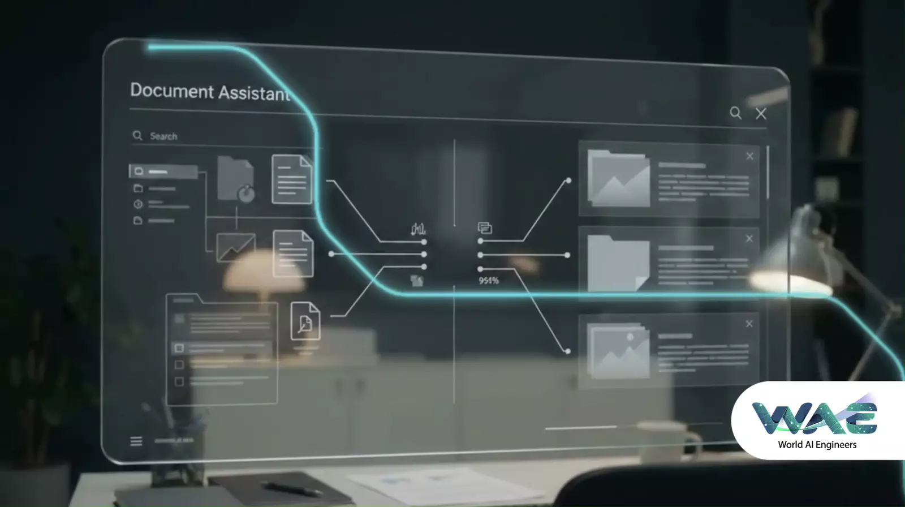
Necesitas más capacidad sin sumar más carga de supervisión.
Integramos especialistas y pods administrados a proyectos de datos, cloud y automatización con acompañamiento técnico, estándares, documentación y continuidad.
WAE ayuda a empresas y socios tecnológicos a integrar información, automatizar procesos, modernizar plataformas y ejecutar proyectos de datos con una arquitectura proporcional, documentación clara y resultados medibles.
Explora nuestras capacidades según el reto que necesitas resolver. Cada solución se diseña con alcance claro, tecnología proporcional y resultados que puedan medirse.

Necesitas más capacidad sin sumar más carga de supervisión.
Integramos especialistas y pods administrados a proyectos de datos, cloud y automatización con acompañamiento técnico, estándares, documentación y continuidad.
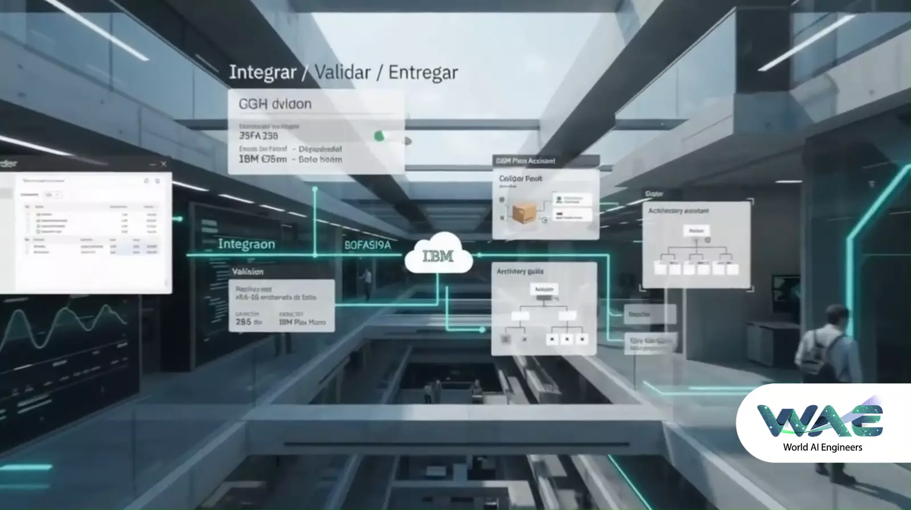
Tu operación depende de procesos manuales o sistemas que no se conectan.
Analizamos un proceso crítico, construimos una línea base y definimos la alternativa más proporcional para integrarlo, automatizarlo o modernizarlo.
Hay empresas que ya cuentan con ERP, CRM, WMS, plataformas contables, bases de datos y herramientas de analítica. Sin embargo, entre una plataforma y otra siguen existiendo archivos, correos, hojas de cálculo y personas encargadas de mantener los procesos conectados manualmente.
Especialistas y pods administrados para acelerar proyectos, con supervisión, documentación y continuidad, apoyados por herramientas modernas de ingeniería.
Conectamos aplicaciones, fuentes y flujos para reducir fragmentación y trabajo manual, incorporando procesamiento inteligente cuando aporta valor.
Convertimos tareas repetitivas en flujos controlados y medibles, combinando reglas, integraciones y capacidades de IA cuando el proceso lo requiere.
Evolucionamos pipelines, bases de datos y plataformas heredadas para mejorar rendimiento, escalabilidad y mantenibilidad.
Incorporamos calidad, monitoreo, alertas y trazabilidad, complementados con análisis inteligente para detectar anomalías cuando aplica.
Evaluamos datos, permisos, reglas y controles antes de definir e implementar una solución de inteligencia artificial responsable.
Monitoreamos, mantenemos y optimizamos soluciones existentes, incorporando automatización y análisis inteligente cuando mejoran la operación.
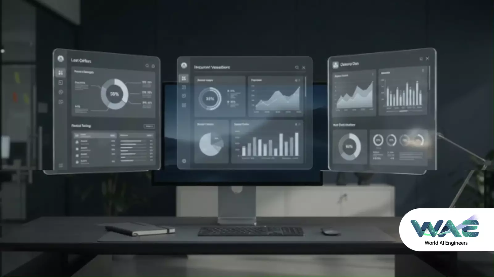
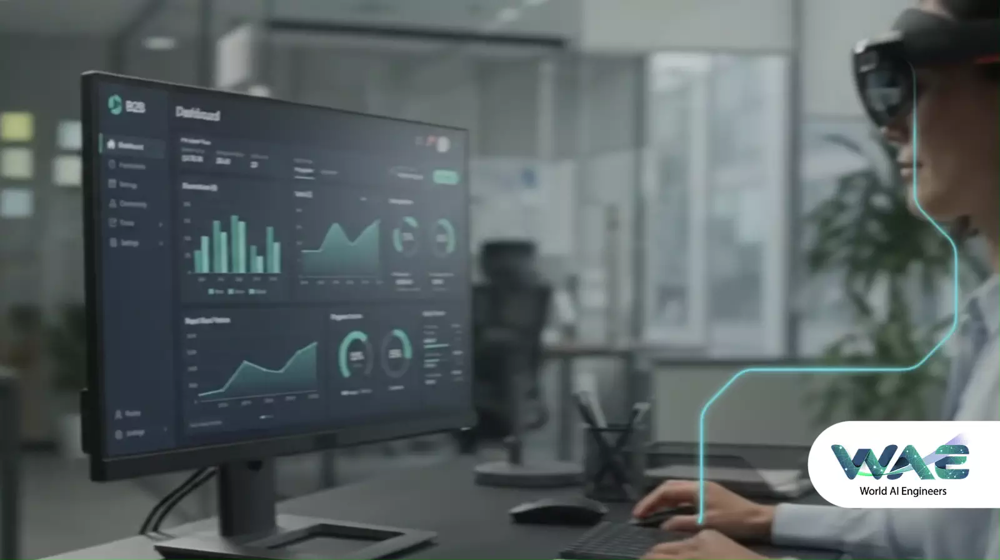
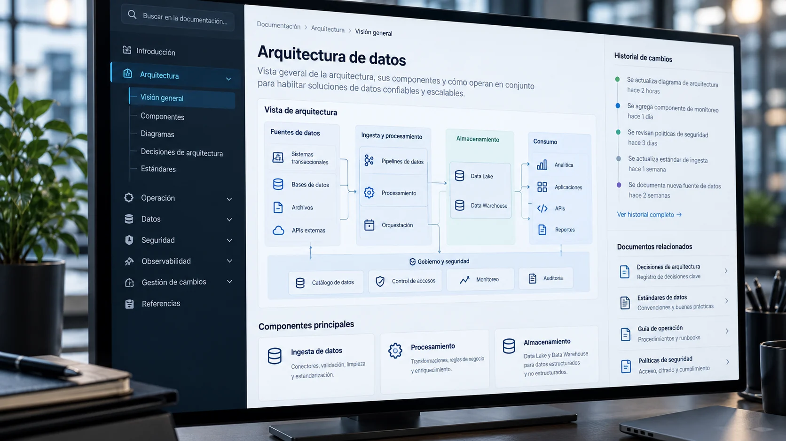
Empresas que impulsamos con datos e IA
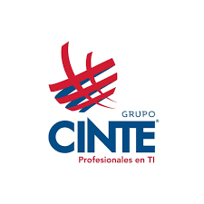
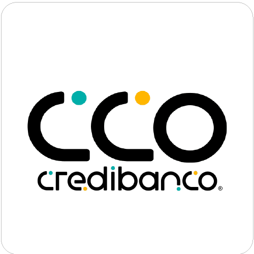
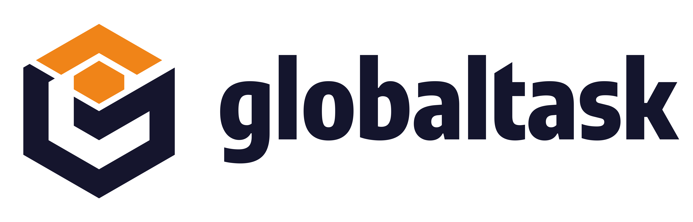
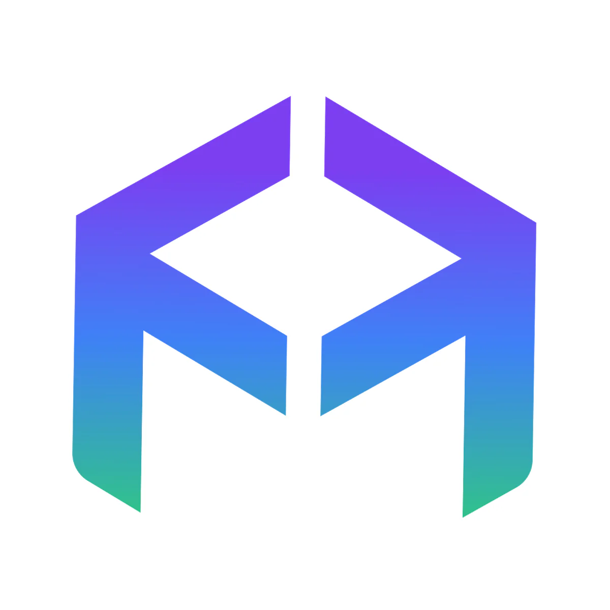
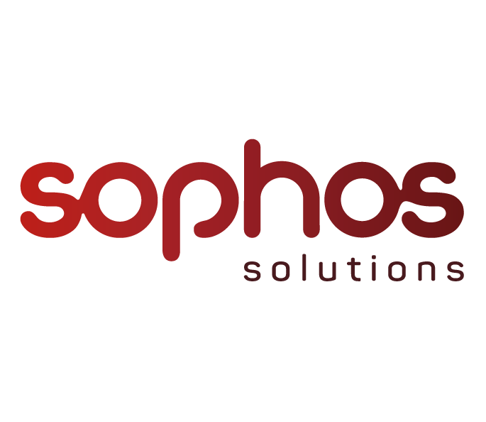
Cuéntanos sobre tu proyecto. Analizamos tu contexto y te proponemos un plan técnico concreto — sin rodeos.
Certificados
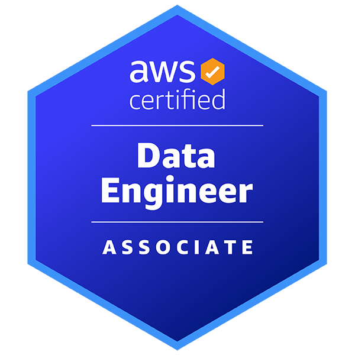